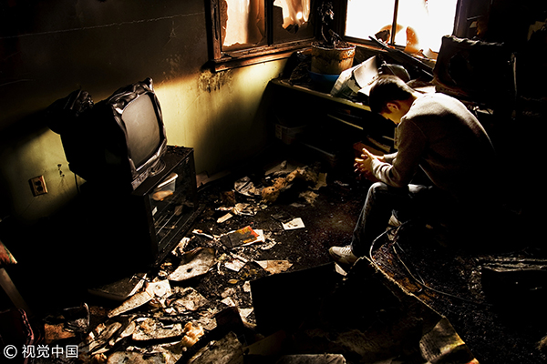

文：陈禹霏丨壹心理专栏作者
责任编辑：LSD Spencer
题图来源：视觉中国 网络剧照
最近，一部获得金像奖最佳导演提名的香港电影《一念无明》公映，男主角阿东（余文乐 饰），是一位双相情感障碍患者。这是一种精神疾病，患者在躁狂和抑郁的心境中反复交替循环，严重影响生活。如果说我们平时的情绪是波浪，那么，双相障碍的内心，是急上急下的巨浪。阿东做了一件骇人听闻的事：他失手杀掉了自己的母亲。由于被确诊患有严重的精神疾病，法庭做了无罪宣判，阿东住进医院接受治疗。一年后，多年在内地做司机几乎不露面的父亲黄大海（曾志伟 饰）接他出院，真正的故事才开始了。

阿东和父亲住在狭小破败的出租屋，几平米，和邻居只隔着薄薄的墙板，逼仄阴暗中勾勒出香港底层社会的生活空间。电影聚焦在这么一位“少数派”身上，当然是有原因的。电影的明线，是精神疾病撕裂了一个人的生活，但是，却总有些只言片语在提醒，撕裂一个人内心的，其实是我们任何一个人都可能遇到的事。比如金燕玲饰演的母亲，一不顺心就对阿东破口大骂，捏腿捏重了，劈头盖脸地斥责，“你是不是想弄死我？！”阿东的脸色，分明就是一个受尽委屈但不能反抗的孩子。因为想避开情绪暴躁的妻子，阿东的父亲跑到内地开车很少回家。弟弟名义上去美国工作，实际上也想离家远远的，留下生病的母亲让阿东照顾。女朋友看不惯，“你照顾她又怎么样，她也没正眼瞧过你一眼！”阿东成了家庭的情绪出口，背负着本不该承受的压力，是不是有几分感同身受？只不过，阿东要承受得更多。
阿东曾经在金融业工作，在香港这个寸土寸地的地方，和女友共同供一套房。出了院，他想和女友“生一个球队”。但是女友的原谅谈何容易？对她来说，男朋友先是借债几百万炒股失利，然后又突发杀死母亲，住进精神病院，本来和男友一起供楼，房贷突然全部压在自己身上。在阿东住院的一年，她依靠着信仰艰难度过。在一次教会活动上，当着阿东的面，她什么都讲了，痛哭流涕大喊：“我好恨你！”